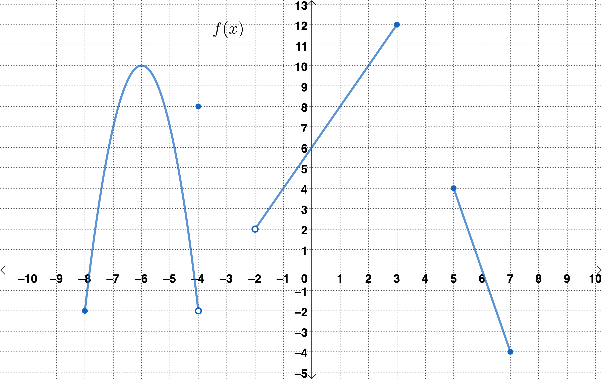
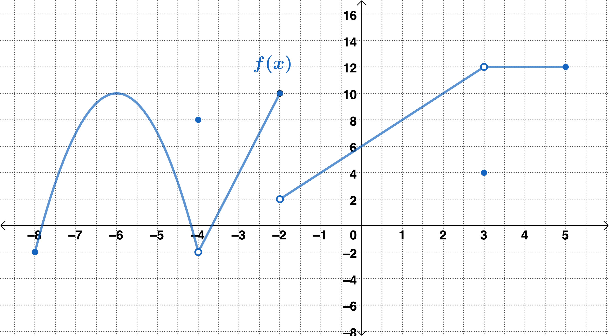

Directions: Answer each of the following as best you can. Feel free to discuss your thoughts about the questions with some peers around you. For additional practice problems and explanations, refer to the Math 142 textbook which is free and can be downloaded as a PDF at Texas A&M The OAKTrust Digital Repository.
Complete the graph below so \(f(x)\) has the domain \([-8,7]\text{,}\)\(\D\lim_{x \rightarrow -4} f(x)=-2\text{,}\) and \(\D\lim_{x \rightarrow 5^-} f(x)=9\text{.}\)

The graph of a piecewise-defined function \(f(x)\) plotted on coordinate axes. The function is a parabola with vertex at the point \((-6, 10)\) and endpoints at \((-8,-2)\) and \((-4,-2)\) where \((-8, -2)\) is a closed circle and \((-4,-2)\) is an open circle. The point \((-4, 8)\) is a closed circle. The function is linear with open endpoint \((-2,2)\) and closed endpoint \((3,12)\text{,}\) and again linear with closed endpoints \((5,4)\) and \((7,-4)\text{.}\) No graph is given between \(x=-4\) and \(x=-2\text{,}\) and between \(x=3\) and \(x=5\text{.}\)
Complete the tables below to estimate \(\D\lim_{t \rightarrow 0} \frac{|t-5|}{t}\) numerically. If the limit does not exist, state so and use limit notation to describe any infinite behavior. Round your answers to four decimal places (if necessary).
Set up a table to estimate \(\D \lim_{x \rightarrow -2} \frac{x^2-x-6}{(x+2)(x+7)}\) numerically. When creating your table, show at least three \(x\)-values approaching \(-2\) from each side and their corresponding function values in the table. If the limit does not exist, state so and use limit notation to describe any infinite behavior. Round your answers to four decimal places (if necessary).
Given the graph of \(f(x)\) below and \(g(x)=\frac{10x-30}{x^2-x-6}\text{,}\) find \(\D\lim_{x \rightarrow 3} \left( \frac{f(x)+5x}{2}+\sqrt{g(x)+14} \right)\text{.}\)

The graph of a piecewise-defined function \(f(x)\) plotted on coordinate axes. The function is a parabola with vertex at the point \((-6, 10)\) and endpoints at \((-8,-2)\) and \((-4,-2)\) where \((-8, -2)\) is a closed circle and \((-4,-2)\) is an open circle. The function is linear with open endpoint \((-4,-2)\) and closed endpoint \((-2,10)\text{.}\) The function is linear with open endpoints \((-2,2)\) and \((3,12)\text{.}\) The function is again linear with open endpoint \((3,12)\) and closed endpoint \((5,12)\text{.}\) The points \((-4, 8)\) and \((3,4)\) are closed circles. There is no graph to the left of \(x=-8\) or to the right of \(x=5\text{.}\)
\(\D f(x)= \begin{cases}5^{4x-3}&x \leq -5\\ \\ \D \frac{x^2-x}{x^2+2x}&x>-5 \\\end{cases}\) find the following limits. If the limit does not exist, state so and use limit notation to describe any infinite behavior. Round your answers to four decimal places (if necessary).
Find the following limits algebraically. If the limit does not exist, state so and use limit notation to describe any infinite behavior. Round your answers to four decimal places (if necessary).
Graph of a function \(g(x)\) plotted on coordinates axes. The graph decreases from the top left corner, dips below the \(x\)-axis and then increases until it encounters a vertical asymptote at \(x=1\text{.}\) To the right of \(x=1\text{,}\) the function increases until it leaves the coordinate axes on the top right.
Graph of a function \(g(x)\) plotted on coordinate axes. Starting on the left, the graph increases away from, but never touches, the horizontal asymptote \(y = -6\text{.}\) The graph reaches a peak above the \(x\)-axis, and then decreases along, but never touching the vertical asymptote \(x=3\) until it leaves the coordinate axes. The graph then increases to the right of the vertical asymptote, approaching but not touching the horizontal asymptote \(y = -6\) until it leaves the coordinate axes.
Jenn starts by evaluating the limit \(x \to \infty\) of the numerator and of the denominator separately, but gets the indeterminant form \(\D\frac{\infty}{-\infty}\) for the overall limit. She then remembers a technique from math class: when evaluating limits at infinity, divide every term in the numerator and denominator by the term with the highest power in the denominator. What should she divide each term by? What is the result after division?
The next step is to take the limit \(x \to \infty\) of each term in \(f(x)\) as rewritten in part (a). For example, the term \(\D\frac{12}{x^{7}}\) goes to \(0\) as \(x \to \infty\text{.}\) We can indicate this by writing \(\D\cancelto{{0}}{\frac{12}{x^{7}}}\text{.}\)
we need to investigate the \(y\)-values of \(f(x)\) as \(x\) gets very near \(x=5\) from both the left and right sides of \(x=5\text{,}\) but not necessarily at \(x=5\text{.}\)
Find \(\D\lim_{x\rightarrow 2^-} \frac{3x^2}{x^2-4}\text{.}\) If the limit does not exist, but has infinite behavior, use limit notation to describe the infinite behavior of the function as \(x \longrightarrow 2^-\text{.}\)
\(\D{\lim_{x\rightarrow 2^-} \frac{3x^2}{x^2-4}}\) DNE, but has infinite behavior that can be described as \(\D{\lim_{x \rightarrow 2^-} f(x) \rightarrow -\infty}\text{.}\)
\(\D{\lim_{x\rightarrow 2^-} \frac{3x^2}{x^2-4}}\) DNE, but has infinite behavior that can be described as \(\D{\lim_{x \rightarrow 2^-} f(x) \rightarrow \infty}\text{.}\)